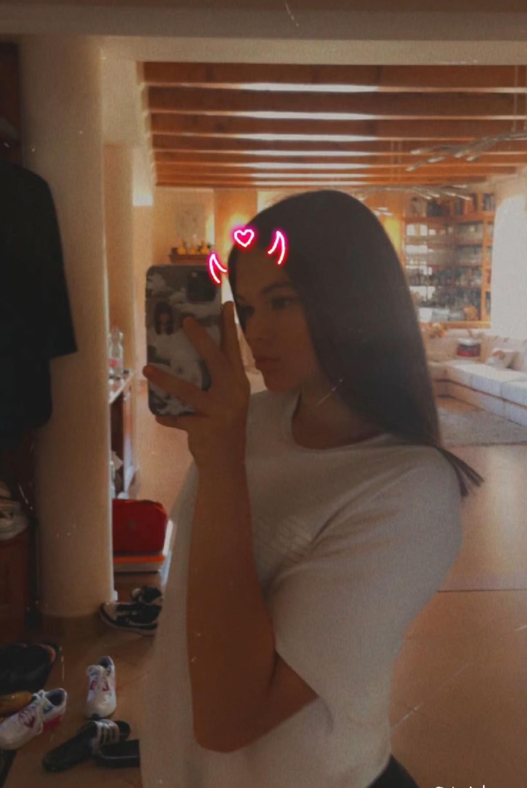
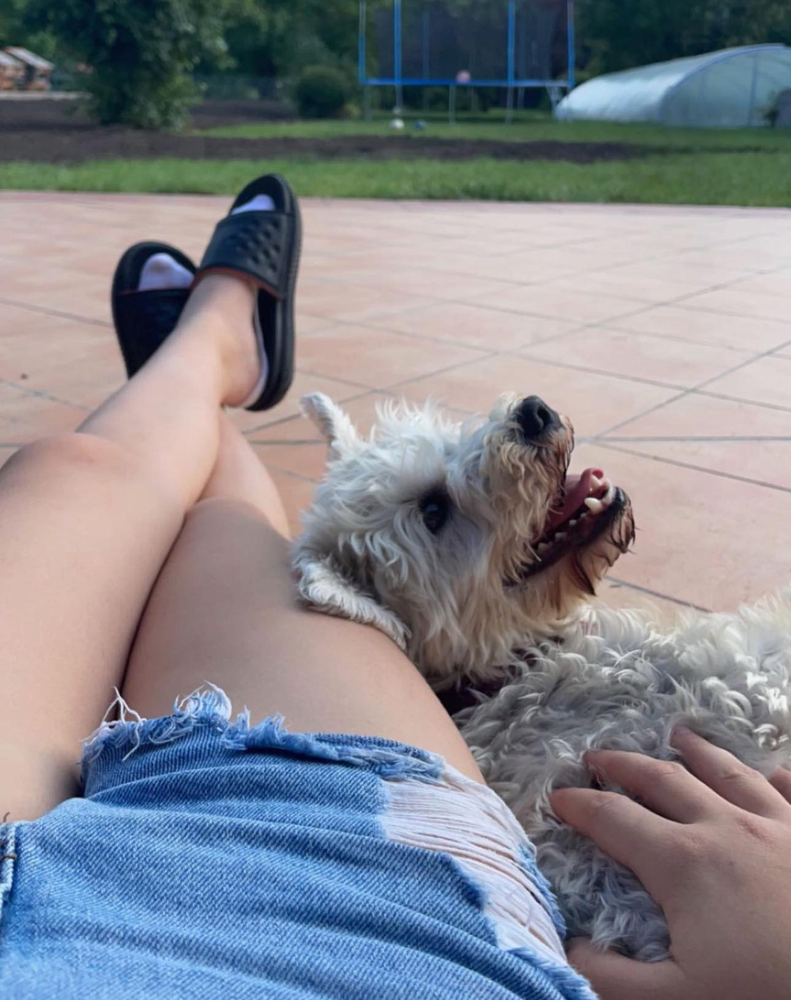
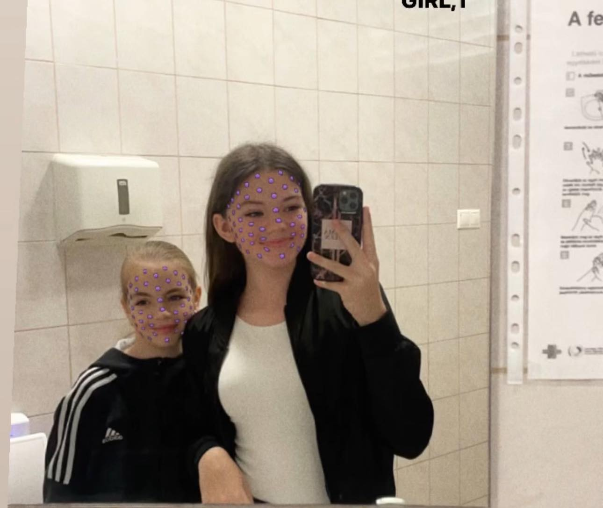

Tudnivalók

Született: 2010. július 7. , Miskolc, Magyarország
Magasság: 1,65 m
Állampolgárság: Magyar
MBTI:
Sport: kosárlabda
Háziállat(ok)

Tények

- Szeret a barátaival lenni
- kedvenc színe a rózsaszín
- Nincs kedvenc kajája csak olyan legyen amit szeret
- Utálja a focit
- Van két nővére
- Kedvenc film: nincs kedvenc, mindet szereti